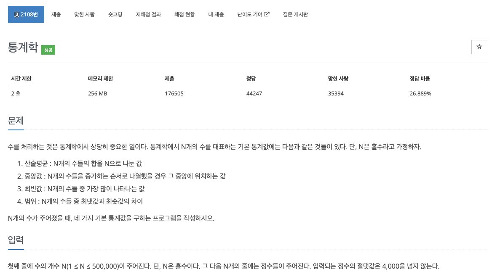

#info

#Solve
최빈값 처리에서 상당히 애를 먹었던 문제이다.
각 변수의 역할은 다음과 같다.
int N :입력받을 정수의 개수이다. (Max : 500,000)
int sum : 입력받은 정수의 총 합을 저장할 변수이다. (산술평균 계산 시 사용)
int arr[N] : 입력받은 정수의 정보를 저장할 배열이다. (중앙값 계산 시 사용)
vector<int> mode_candidates : 최빈값 후보를 저장할 베겉이다. 문제 조건 중 최빈값이 여러개 존재하는 경우 최빈값 중 두 번쨰로 작은 값을 출력하라는 조건이 있었기에 따로 후보 벡터를 선언해 두었다.
int bindo[8001] : 정수가 몇 번 등장하는지 저장할 배열이다. 입력되는 정수의 절댓값은 4000을 넘지 않기에 -4000 ~ +4000 사이의 정수만 등장할 수 있다. 따라서 bindo 배열의 크기를 8001로 선언해 두었다.
단, 배열에 음수 인덱스는 존재하지 않기에, -4000 ~ 0 사이의 값에 4000을 더해주어 배열의 0~4000 인덱스 사이에 저장하고, 0 ~ +4000 사이의 값은 4001 ~ 8000 사이의 인덱스에 저장해 주었다.
int main() {
// buffer 속도 성능 향상
ios_base::sync_with_stdio(false);
cin.tie(nullptr); cout.tie(nullptr);
int N; // Max 500,000
int bindo[8001]; // 최빈값을 저장할 배열
cin >> N; // max 500,000
int arr[N];
int sum = 0, base = 4000; // sum = 전체 합을 저장할 변수
vector<int> mode_candidates; // 최빈값 후보를 저장할 벡터
for (int i = 0; i < N; i++) {
int input_data;
cin >> input_data;
sum += input_data; // 전체 합
arr[i] = input_data;
bindo[base + input_data]++; // 최빈값 빈도 배열 저장
}
산술 평균 계산 로직이다.
소수점 이하 첫째 자리에서 반올림한 값을 출력해야 하기에 round 메서드를 사용해 반올림을 수행했다.
또한 -0.3333.. 같은 소수점을 반올림 하면 -0으로 출력되는 예외를 처리하기 위해서 if ~ else 문으로 따로 처리해 주었다.
// 1. 산술평균 : N개의 수들의 합을 N으로 나눈 값 (0)
// -> 소수점 이하 첫째 자리에서 반올림해야 한다.
int ans = round(static_cast<double>(sum) / N);
if (ans == -0) cout << 0 << '\n';
else cout << ans << '\n';
중앙값 계산 로직이다.
입력받은 N개의 수를 저장한 배열을 sort 함수를 사용해 오름차 순으로 정렬해 주었으며, N은 항상 홀수라는 조건이 주어졌기에 단순히 배열의 가운데 있는 수를 출력한다.
// 2. 중앙값 : N개의 수들을 증가하는 순서로 나열했을 경우, 중앙에 위치하는 값 (0)
// N은 항상 홀수 이기에 다른 경우의 수는 없음.
sort(arr, arr + N); // nlogn
cout << arr[N / 2] << '\n';
최빈값 계산 로직이다.
빈도 배열을 순회하며 max_cnt (최대 빈도 값) 과 일치하면 미리 정의해둔 최빈값 후보를 저장하는 벡터인 mode_candidates에 값을 추가한다.
만약 빈도 배열에 저장된 원소가 max_cnt 값보다 크다면 mode_candidates 벡터에 저장된 모든 원소를 제거한 뒤, max_cnt 값을 새롭게 업데이트한다.
// 3. 최빈값 계산
int max_cnt = 0;
for (int i = 0; i <= 8000; i++) {
if (bindo[i] > max_cnt) {
max_cnt = bindo[i];
mode_candidates.clear();
mode_candidates.push_back(i);
} else if (bindo[i] == max_cnt) {
mode_candidates.push_back(i);
}
}
우선 mode_candidates 벡터를 오름차 순으로 정렬한다. (최빈값이 여러개 존재하는 경우 두 번째로 큰 값을 출력하기 위함.)
mode_candidates 벡터의 크기가 1이라면, 최빈값이 하나만 존재한다는 뜻 이기에, 그대로 0번째 원소를 출력하며
만약 1 보다 크다면 최빈값이 여러개 존재한다는 의미 이기에 1번째 원소를 출력한다.
// 최빈값 중 두 번째로 작은 값을 출력
sort(mode_candidates.begin(), mode_candidates.end());
if (mode_candidates.size() == 1) {
cout << mode_candidates[0] - base << '\n';
} else {
cout << mode_candidates[1] - base << '\n'; // 두 번째로 작은 최빈값
}
최대최소 차이 계산 로직이다.
사실 이미 배열은 정렬되어 있기에, 굳이 *max_element, *min_element를 사용할 필요는 없고 그냥 배열의 마지막 원소에서 첫번째 원소를 출력해 주어도 상관 없다.
// 4. 범위 : N개의 수들 중 최댓값 최솟값 차이 (0)
int max_value = *max_element(arr, arr + N);
int min_value = *min_element(arr, arr + N);
cout << max_value - min_value << '\n';#CODE
C++ - https://github.com/novvvv/PS/blob/main/BOJ/Solved.ac/Class2/2108.cpp
PS/BOJ/Solved.ac/Class2/2108.cpp at main · novvvv/PS
알고리즘 문제 풀이 코드 모음. Contribute to novvvv/PS development by creating an account on GitHub.
github.com
Java - 추가예정